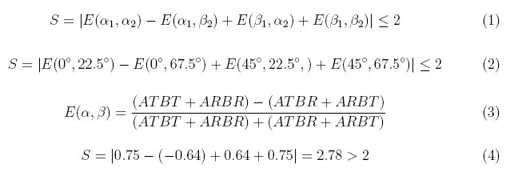
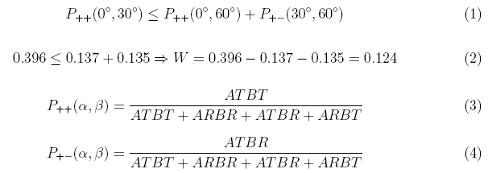
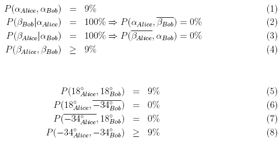

Entanglement chapter D:
Proof of non-locality
With a gedanken-experiment, Einstein, Podolsky and Rosen pointed out the problem of non-locality with entangled quantum objects [Ein35]. The mathematical formalism of quantum theory predicts a bizarre behaviour of entangled photons (or other quantum objects) as we have seen in the experiments: At the position of one detector, there is a 50% chance of transmission and reflection, and the actual outcome of a single measurement cannot be predicted. For two detectors far away from each other, a single measurement on entangled photons yield perfect correlation. How does Alice’s photon “know” what happens to Bob photon far away? Maybe quantum theory was incomplete, because a hidden mechanism would determine the photons’ ways to go and the random process at the beam splitter only appears to be random to an observer with insufficient knowledge? John Bell proved in 1964 that there is a way to distinguish by experiment between local theories which claim unobservable local properties, and non-local theories [Bel64]. The proof was refined for being used with non-perfect detectors [Cla69], and the first experimental evidence for non-locality was published in 1972 [Fre72]. So far, all experiments have some sort of loophole, i. e. a possibility that some sort of obscure mechanism would sort out the measurements which confirm non-locality while some other experiments are suppressed. Continuous experimental progress [Fry95], [Wei98], [Row01] makes this loophole smaller and smaller. We summarize three different approaches (CHSH, Bell-Wigner, Hardy) to prove nonlocality by experiment.
CHSH inequality to prove non-locality by experiment
The original work of Clauser, Horne, Shimony, and Holt [Cla69] is discussed in several didactical articles on nonlocality [Bel80], [Mer81]. The following formulas 1-2 for the CHSH inequality are derived for example in [Fox06] (page: 304-309). We use the same notation. The CHSH inequality is based on correlation functions E measured for various polarizations. ATBT is the coincidence rate “Alice transmitted & Bob transmitted”, ARBR is "Alice reflected & Bob reflected” and so on:

The upper limit of any local realistic theory is S=2, whereas (nonlocal) quantum physics predicts S = 2.82. We measured a value of S=2.78 (each 10s measurement - formula 4). With another measurement (each E 10*180s), we have confirmed the value S with S=2,61868±0,00268. This is 230 standard deviations beyond the limit of local theories.
Bell-Wigner inequality to prove non-locality by experiment
A mathematically different approach has been suggested by Wigner [Wig70]. This approach is discussed in several didactical articles with twins [Zei05] or employees [Emb00]. Similar to the CHSH method, coincidence rates are compared for different polarization angles and the results are different for local and non-local theories. The following formulas 1-2 for the Bell-Wigner inequality are derived in [Sak85] or [Sch98]. We use the same notation:

The upper limit for the function W is zero for any local theory, while quantum physics yields W=0,125. We measured a value of W=0,12412 ±0,00163 (formula 2) - 76 standard deviations beyond the limit of local theories.
Hardy's approach to prove non-locality by experiment
The approach of Hardy [Har93] is very interesting, because it does not rely on an inequality. Any local theory would predict that certain events would happen with 9% probability while they never should happen according to nonlocal quantum theory. Didactical examples have been given by [Mer94], [Bra97], [Kwi00], [Car06]. A didactical example of Hardys inequality with caps and shoes is given in chapter 4. For Hardy's approach the following probabilities are needed:
.
Hardy’s result is more obvious than for CHSH and Wigner, however the observation of no events is a loophole, since it could be caused by inoperative detectors. In contrast to CHSH and Wigner, Hardy’s method relies on partially entangled states which are generated by adjusting the polarization of the pump laser e. g. to 65° instead on 45°.
An interactive experiment for Hardy’s prove of nonlocality is available below. Alice and Bob can select two polarization angles (18° and -34°) by rotating the λ/2 plate in front of their detectors (using the grey switches below the plate holder). Any local explanation would predict P(β_Alice, β_Bob) = 9%. But what are the experimental results with entangled photons?
Observation
In the experiment we find P(β_Alice, β_Bob) = 0 according to the prediction of the nonlocal quantum theory.
Original data: Hardy-continuous
Back to overview [klick]
Author: P. Bronner, May 2008